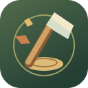

FALL
FELLOWS
COPPER GROVE · 01
A Good First Fall
0 / 3
GOOD FALLS
LAND HERE
DRAG TOWARD THE GOLD RING
Lift to chop.
Sharpening the axe…
ONE GOOD LINE
Find the gold ring.
Drag to aim. Lift to chop.
WIND & LEAN
↔
READY
‹
›
CHOP
GUIDE
FALL FELLOWS
A little breather.
BACK TO THE GROVE